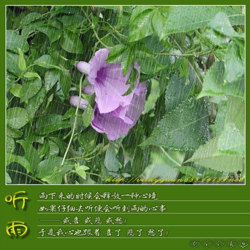

心情不好时进来*听雨*吧
每次有雨声的夜里，总是睡得特别的香，特别的甜。
举头看看无尽的雨丝，凝眸望望满目的葱笼，

［ 被感动的人 于 2011-7-11 19:10:57 时花20金币送鲜花一朵］
［ 蓝天蓝 于 2011-7-11 19:59:23 时花20金币送鲜花一朵］
引用：同意。
原文由 非黑既白 发表于 2011-7-11 19:09:57 :
谢谢分享！心情好的时候听着会更好:)［ 被感动的人 于 2011-7-11 19:10:57 时花20金币送鲜花一朵］
http://box.baidu.com/widget/flash/mbsong.swf?name=%E5%90%AC%E9%9B%A8&artist=%E5%B9%BF%E6%99%BA
广智 听雨
作词:广智 作曲:广智
雨像块玻璃 将你我隔离
谁正在叹息 配合这雨滴
我知道是谁 把浪漫变成泪滴
这个季节 这座城市
仅剩冰冷空气
你转身离去
我守着回忆 看时间逃避
谁陪我哭泣 我知道这时候
拥抱已没意义
最后一分 最后一秒
数着最后甜蜜
听 这冷冷的雨 狠狠落在心底
淋湿爱的痕迹 我已无力反击
心 也开始下雨 思念不能停息
［此帖子已被 蓝天蓝 在 2011-7-12 15:50:07 编辑过］

本来定好的26号回家，火车票丢了，心情好差，能给个威望安慰下么
［ 蓝天蓝 于 2011-7-25 19:40:13 时花20金币送鲜花一朵］